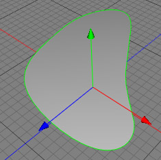

|
Polyplane ObjectThe polyplane object offers a quick and versatile way of transforming a spline into a surface, as in the images below. Whilst this is very easy to use, you should consider that the polyplane objects only generates surfaces made of triangles - if you made the resulting polyplane object editable you end up with a polygon object which only contains triangles. This will cause problems if you then go on to use the Subdivide tool.  Usage Properties
|